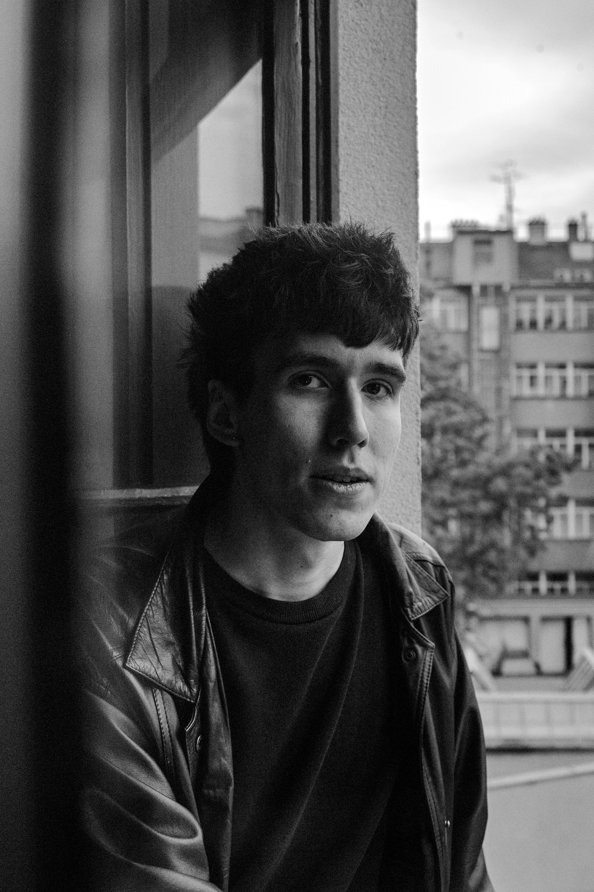
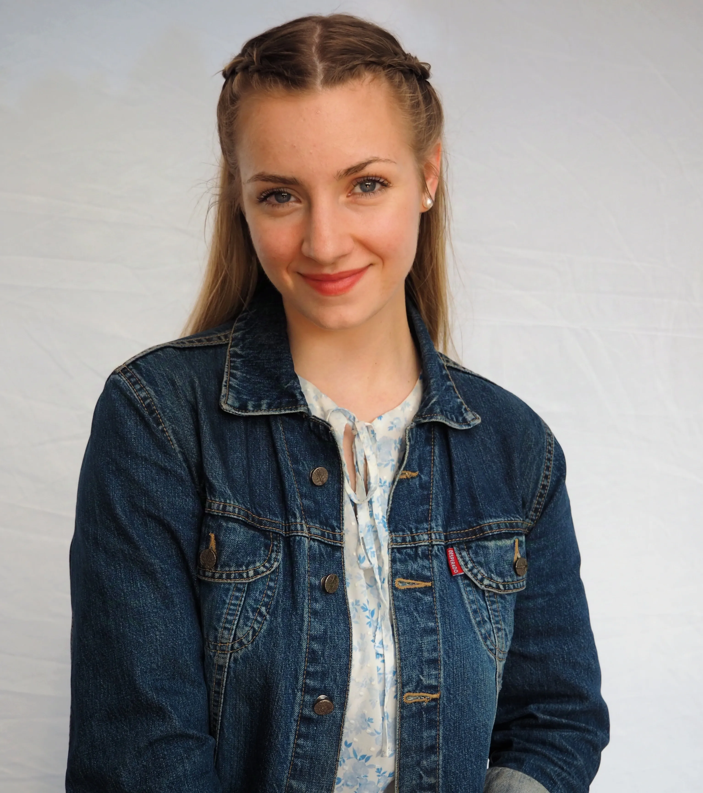

Medium · Historie
Lenka Potučková: Karolína, Charlotta, Dorothea Meineke — královna z Blanska
Příběh Karolíny Meineke, ženy, která se provinčně vymanila z dějinných rolí a přesto zůstala skrytou královnou v paměti Brna.
Číst článekMuzikál — Divadlo na Orlí, Brno — 2026
Inspirováno životem Karolíny Meineke
Příběh
Tři místa, jeden osud a tajemství,
které anglická koruna pohřbila na dvě staletí.
O muzikálu
Synopsis
Příběh muzikálu je inspirován osudem Karolíny Meineke, rozené von Linsingen — tajné manželky britského krále Viléma IV., jejíž život byl v důsledku politických a mocenských rozhodnutí systematicky vytěsněn z oficiálních dějin.
Téma má výrazný regionální přesah: životní příběh Karolíny je úzce spjat s jihomoravským městem Blansko, kde část svého života prožila a kde také zemřela. Inscenace propojuje evropský historický kontext s konkrétním místem v České republice a pokouší se vrátit do kulturní paměti osobnost, která je s tímto regionem přímo spojena.
Výjimečnost projektu spočívá nejen v námětu, ale i ve formě. Nejedná se o klasický školní muzikál, nýbrž o stylizované hudebně-dramatické dílo s ambicí překračovat hranice žánru směrem k opeře.
„Hannover. Londýn. Morava. Tři místa, jeden osud a tajemství, které anglická koruna pohřbila na dvě staletí."
Hudba
Originální muzikálová partitura, která dává hlas příběhu utajené královny. Vyberte si ukázku nebo si pusťte celý playlist.
Celý playlist na YouTube →Autor
Aleš Kohout získal první divadelní zkušenosti v Uměleckém centru dětí a mládeže Květy Kimové. Po studiích muzikálového herectví v ateliéru docentky Sylvy Talpové na JAMU v Brně nastoupil jako sólista muzikálové scény Divadla J. K. Tyla v Plzni, kde během devíti sezón ztvárnil řadu výrazných rolí.
Patří mezi ně Molina v Polibku pavoučí ženy, Moritz Stiefel v Probuzení jara, Ren McCormack ve Footloose či Jerry alias Daphné v Někdo to rád horké.
V současnosti se naplno věnuje autorské a pedagogické činnosti. Společně se Sylvou Talpovou vede již třetí ateliér muzikálového herectví JAMU, od roku 2025 z pozice vedoucího.

Autorská díla · výběr
01
Anna Kareninová
Muzikálová inscenace
02
Frankenstein – skutečný příběh
Muzikálová inscenace
03
Metronom
Muzikálová inscenace
04
Příběh utajené královny
Premiéra 2026 · Muzikálová opera
Forma díla
Příběh utajené královny pokračuje v rozvíjení formy muzikálové opery —
kde se propojuje muzikálová a operní estetika.
Tým
Muzikál vznikl v Ateliéru muzikálového herectví Sylvy Talpové a Aleše Kohouta na Divadelní fakultě JAMU.
Autor, Režie
Aleš Kohout
Choreografie
Marcela Puldová
Dramaturgická spolupráce
Sylva Talpová
Světelný design
Tomáš Příkrý
Scénografie, Kostýmy
Aleš Kohout
Propagační materiály
Jan Šmach, Klára Prchalová
Fotografie ze zkoušek
Lucie Všianská, Petra Čumíčková
Produkce
Sabina Komárková, Kamila Murlová
Obsazení
Po nahrání fotografií herců nahraďte placeholder jejich snímky vložením <img class="cast-photo"> jako první dítě v .cast-card.

Máří-Magdalena Fotrová
Caroline von Linsingen
Foto bude doplněno

Karolína Bútorová
Karolina Meineke
Foto bude doplněno

Richard Ciller
princ William
Foto bude doplněno

Matyáš Kyncl
Adolph Meineke
Foto bude doplněno

Veronika Martinů
Henrietta Meineke
Foto bude doplněno
Natália Klotková
Emílie von Linsingen
Foto bude doplněno

Hynek Mikuš
Ernst von Linsingen / Gustav Friese
Foto bude doplněno

Václav Fiala
Carl Teubner
Foto bude doplněno

Kateřina Michková
Dory Jordan
Foto bude doplněno

Martina Pavlínová
Královna Charlotta / Augusta Friese
Foto bude doplněno
Vznik inscenace
Inscenace vznikla v rámci Divadelní fakulty JAMU
v Ateliéru muzikálového herectví
Aleše Kohouta a Sylvy Talpové
Životní osudy
1766
Karolína se narodila jako dcera šlechtické rodiny v Hamelnu, v Hannoverském kurfiřtství. Svět, do nějž přišla, byl plný dvorních pravidel, ambicí a skrytých tužeb.
1785
V utajení, daleko od královského dvora, se Karolína provdala za anglického prince Jiřího. Sňatek byl dle zákona neplatný — ale v jejich srdcích nesmazatelný.
1795
Z politické nutnosti se princ Jiří oficálně oženil s Karolínou Brunšvickou. Karolína Meineke byla odsouzena k zapomnění — ženě bez jména, bez místa v dějinách.
~1810
Po letech skrývání se Karolína vydala hledat nový domov. Daleko od anglického dvora, daleko od vzpomínek. Středoevropská krajina ji přijala beze soudů.
~1815
V jihomoravském Blansku Karolína konečně nalezla klid. Město uprostřed lesů ji přijalo jako jednu ze svých. Zde mohla být prostě — člověkem.
1820
Karolína Meineke zemřela v Blansku. Pochována v zemi, jež jí dala víc než královský dvůr. O dvě stě let později se její příběh vrací jako muzikál.
Četba & Historický kontext
Ponořte se hlouběji do příběhu Karolíny Meineke. Historické eseje vycházejí na Medium.seznam.cz.
Medium · Historie
Příběh Karolíny Meineke, ženy, která se provinčně vymanila z dějinných rolí a přesto zůstala skrytou královnou v paměti Brna.
Číst článekŽena-in · Osud
Alternativní historie, ve které by královna Viktorie možná nikdy nepoznala svou nástupkyni jako tajnou manželku.
Číst článekStoplusjednička · Drama
Článek mapuje skrytý dramatický rozměr vztahu Karolíny Meineke a jejího anglického prince — příběh zapomenutý v královských archivech.
Číst článekGalerie


Skládaná mozaika z kostýmů a zkoušek zabírá celou šířku stránky a během scrollování postupně ožívá.